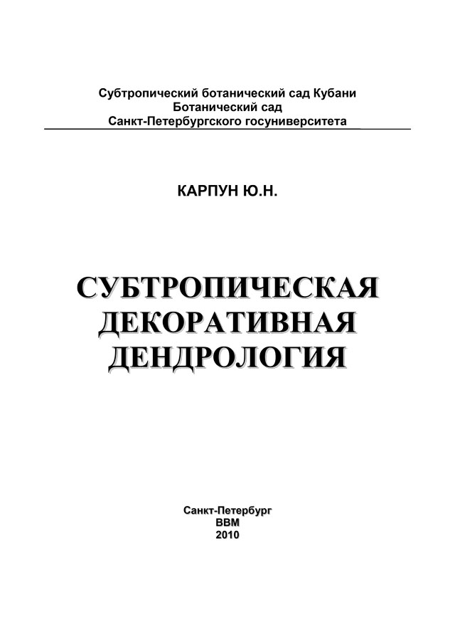

|

Субтропический ботанический сад Кубани
Ботанический сад
Санкт-Петербургского госуниверситета
Скачать книгу в формате *.pdf
Оглавление:
Скачать книгу в формате *.pdf
В современном мире, с его многочисленными проблемами урбанизированной среды обитания, существенно возрастает значимость зеленых насаждений, среди которых ведущая роль принадлежит древесным растениям. Деревья и кустарники – становой хребет парков, садов и скверов, основа большинства типов зеленых насаждений. Особенно велико значение древесных растений в южных регионах, где они обеспечивают столь необходимые тень и прохладу в жаркое время года.
В своем большинстве отечественные труды по дендрологии ориентированы на запросы и нужды лесного хозяйства. В силу этого, литературные источники по дендрологии такой направленности недостаточны для специалистов в области декоративного садоводства по ряду причин. Во-первых, в дендрологиях лесотехнической направленности, традиционно наиболее полно рассматриваются отечественные породы, тогда как в настоящее время в декоративном садоводстве доминируют породы-интродуценты. Во-вторых, зачастую, приводимые сведения ботанического и лесотехнического характера не дают четкого представления о декоративных свойствах древесных пород. В-третьих, в декоративном садоводстве преимущественно используются не естественные виды и разновидности древесных растений, а их садовые формы.
Все это делает актуальной настоящую работу, представляющую собой достаточно полное и сбалансированное по объему и характеру информации справочное пособие по субтропической декоративной дендрологии, которое может служить и учебным, для ландшафтных архитекторов, инженерно-технических работников декоративного садоводства и садоводов-любителей Большого Сочи.
В предлагаемом справочнике с разной степенью подробности приводятся декоративно-хозяйственные свойства 1762 видов, разновидностей и садовых форм древесных растений, представляющих наибольший интерес для практического использования в условиях региона.
Описываемые породы расположены в алфавитном порядке русских научных названий родов, видов и садовых форм, распределенных по разделам:
I - Древесные растения
- хвойные породы
- лиственные породы
II - Древовидные растения
Приводятся принадлежность породы к ботаническому семейству, приоритетное латинское название и наиболее употребительные синонимы.
Необходимо отметить, что данный труд посвящен исключительно проблемам
декоративной дендрологии и не охватывает вопросы, во всяком случае целенаправленно, декоративного садоводства и ландшафтной архитектуры, которые заслуживают отдельного изложения.
Следующая > |